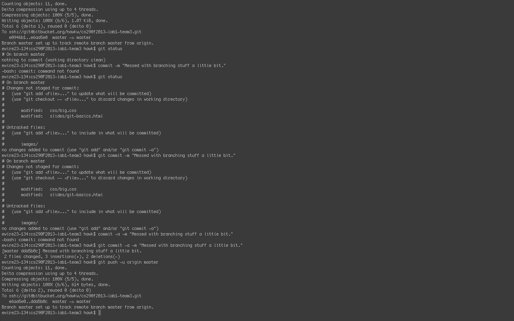

setting up git(and bitbucket)
by team 3
(this tutorial assumes you are using a UNIX system)
step one: creating a bitbucket account
if you do not already have a bitbucket account, create one by visiting bitbucket.org and following the onscreen instructions
step two: installing Git
check to see if git is installed by typing $ which git in a terminal window
if git is not installed, install it using your package manager of choice
step three:
SSH
SSH is used to ensure that communication between your computer and the remote repository is secure
if you do not have an SSH key, you must use the ssh-keygen command to generate one
first, install SSH if it is not already installed (you can check using the command $ which ssh)
once SSH is installed, generate keys using $ ssh-keygen
you must then edit the file ~/.ssh/config using a text editor
add an entry that looks like this: Host bitbucket.org
IdentityFile ~/.ssh/privatekeyfile
now, go to bitbucket.org, open the "Manage Account" page, and select "SSH Keys"
open the file ~/.ssh/id_rsa.pub in a text editor and paste its' contents into the Bitbucket web page
verify that the setup is correct using the command $ ssh -T git@bitbucket.org
congratulations! you are now ready to create repositories and start using Bitbucket!